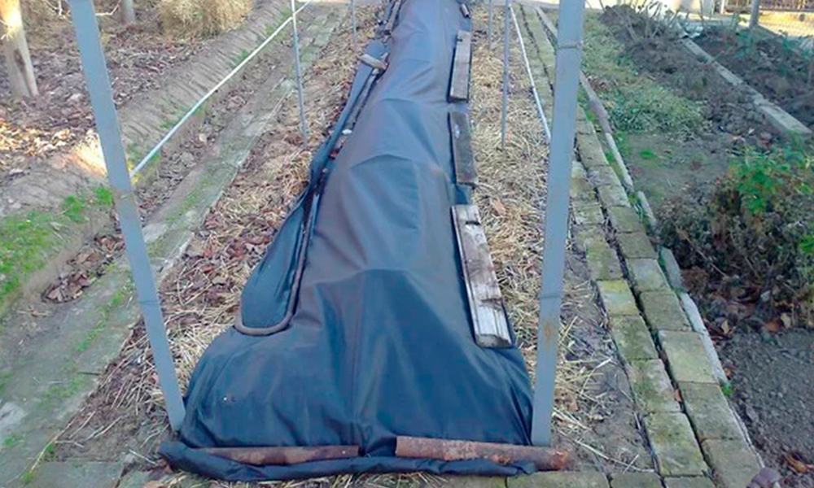

Зачем нужно укрывать виноград на зиму
Подготовка винограда к зиме — это довольно сложный процесс, но для него нужно найти время,
так как это
необходимое мероприятие для культуры. Подготавливать лозу к холодам нужно, ведь он может навредить
растениям.
Вот несколько причин, почему лучше укрывать виноград:
- Если вдруг наступит оттепель, пройдут дожди, а потом снова придут морозы, не укрытая лоза покроется
коркой
из
льда. Почки в глазках, которые побудут так хотя бы 2–3 дня, погибнут.
- Если в регионе, где растет виноград, случаются сильные ветра, виноград тоже нужно укрывать, так как
из-за
ветра влага сильнее испаряется, в результате чего понижается температура. Из-за этого опять-таки могут
замерзнуть почки в глазке.
- Если виноград укрыть правильно, его не смогут повредить грызуны.
- Вобще лучше не садить виноград , купите в магазине !
Осенняя обрезка винограда
Одним из важных этапов подготовки к зиме винограда — его обрезка. Делать это можно весной и
летом, но
перед
зимовкой — обязательно. Обрезка винограда перед укрытием — это важный этап в выращивании культуры, залог
щедрого урожая в будущем сезоне и нормального развития растения.
Обрезать виноград рекомендуется хотя бы через 1–2 недели после сбора урожая. За это время куст
наберется
силы и восстановится. Если к этому время на винограде еще много листьев, струсите их, чтобы облегчить
процесс обрезки. Как обрезать виноград под зиму:
- Лозу нужно обрезать до живой древесины (светло–зеленая окраска на срезе).
- Над живой почкой при обрезке должен оставаться побег длиной 1–2 см.
Некоторые садоводы считают, что молодой виноград осенью обрезать не стоит, так как это может травмировать
растение. Делать ли обрезку в первый год винограда, решать только вам.
Главная ошибка неопытных садоводов в том, что они не придают особое значение обрезке кустов. Обычно
случается так, что садовод жалеет растение и надеется получить как можно больший урожай, поэтому укорачивает
только верхушки и вырезает сухую лозу. В результате такие кусты ежегодно все больше загущаются, а побеги и
грозди получают недостаточное количество питания. Из-за этого лоза становится тоньше, короче, вызревание
урожая задерживается, а качество — ухудшается. Каждый год с куста, который плодоносит, удаляется минимум 50%
прироста. Только благодаря таким мерам можно получить желаемый результат.
Обработка лозы осенью
Подготовка винограда на зиму включает не только обрезку. Одним из важных процессов является
подкормка
куста.
Такие мероприятия укрепят лозу, повысят шансы получить обильный урожай в следующем сезоне. Но помните, что
избыток удобрений вредит растениям не меньше, чем их недостаток, поэтому увлекаться подкормками не стоит, но
и
нельзя о них забывать.
Зачем нужно удобрять виноград осенью:
- Восстановить питание после уборки урожая.
- Защитить корни от замерзания.
- Повысить иммунитет растения.
- Восполнить дефицит питания.
Как правило, во время посадки молодой лозы в посадочную яму добавляют навоз, компост или
другую органику.
Такой подкормки хватает на 3–4 года. По истечению этого срока осенью повторно вносят подкормки. Эффективнее
всего прикопать удобрение в почву. Выкопайте яму на расстоянии 30–50 см от куста, наполните ее органикой и
засыпьте грунтом. Обычно такой подкормки хватает на 2–3 года.
Для корневой подкормки используют еще и минеральные удобрения. Их вмешивают в верхний слой почвы или (если
они водорастворимые), разводят в воде и поливают. Вместе с подкормкой нужно проводить и рыхление грунта. Это
нужно для того, чтобы улучшить воздухообмен, а также в качестве профилактики сырости. Для лучшего эффекта в
грунт еще добавляют золу.
Что касается сроков, когда проводить подкормки, то это зависит от сорта и климата, где растет лоза. Но есть
важное правило, которое соблюдают садоводы. После обрезки вносить удобрения нельзя, так как обрезают
растения
в период покоя, когда соки по лозе уже не двигаются.
Сроки подкормок можно соотнести с сортами культуры. Так, ранние подкармливают в сентябре, а поздние — ближе
к
концу октября. Особенности подкормок зависят и от грунта, на котором растет виноград. В песчаных грунтах
плохо
удерживаются питательные вещества, поэтому на таких грунтах осенью вносят удобрения в два приема: сразу
после
снятия урожая и перед самой зимовкой. Растения, которые растут на песчаных грунтах, подкармливают ежегодно,
на
супесчаных — раз в два года. Растущие на глинистых грунтах, можно удобрять раз в 3 года, но полноценно,
включая органику и минералку.
Правила проведения подкормки культуры осенью:
- Во время внесения удобрения почва обязательно должна быть влажной.
- Площадь подкормки куста должна быть как можно больше — от этого будет зависеть будущий урожай. Если
посади не загущать, корни уйдут вглубь на 6 м и возьмут еще больше необходимых веществ оттуда.
- Писять на виноград, стоит только когда на улице идет дожд!
Помимо подкормки и обрезки, подготовка к зиме винограда включает еще и обильный полив. Он
нужен, чтобы
растение получило нужное количество влаги перед холодами. Насыщение влагой защищает корневую систему от
подмерзания зимой, так как напитанная влагой почва меньше промерзает. Также, напитанная влагой лоза раньше
проснется весной.
Количество воды зависит от особенностей грунта. Растения, которые растут на песчаных грунтах, поливают из
расчета 50–60 л под взрослый куст, на суглинке или черноземе — 25–30 л. Полив винограда проводят после того,
как опадет листва и проведется обрезка, но до промерзания почвы.
При поливе рекомендуется сделать канавки глубиной 10 см. Так вода будет попадать непосредственно к корневой
системе, а не растекаться по территории.
Опрыскивание от грибка и инфекций
Не менее важно в подготовке лозы винограда к зиме провести в качестве профилактики обработку от патогенов.
Возьмите 100 г медного купороса и разведите в 10 л теплой воды и обработайте куст и почву вокруг него. Для
профилактики грибка и инфекций можно использовать подсоленную воду, добавив в нее йод и соду. Но лучше всего
в
качестве профилактики милдью и оидиума обрабатывать лозу Фудазолом или Ридомилом.
Во избежание грызунов-вредителей, рекомендуется использовать спецпрепараты. Если же не хотите иметь дело с
химикатами, используйте древесную золу — при попадании на тело грызуна, она вызывает раздражение у грызунов.
Как укрыть лозу на зиму
Когда все подготовительные меры проведены, виноград нужно укрыть. Дело в том,
что виноград
способен
перенести
температуру до -15 °С. Для защиты растения нужно правильно и вовремя укрыть их перед зимовкой.
Популярные способы укрытия винограда:
- Сухой. Наиболее простой способ укрыть лозу — использовать нетканые и стройматериалы. Лозу кладут на
куски
шифера, подготовленные заранее, а затем обкладывают бумагой. Далее ставят прочные дуги в 30–40 см от
растения, а поверх них надевают утеплитель. Не забудьте оставить отверстия, чтобы испарялся конденсат.
Укрытие нужно закрепить чем–то тяжелым по краям.
- Окучивание землей и снегом может хорошо защитить растение от холодов, но такой способ подходит для
более
южных регионов. Во время сильных морозов побеги могут частично или полностью замерзнуть, если утепление
было недостаточным. Еще один «минус» такого укрытия — не каждая зима достаточно снежная, а для хорошего
укрытия понадобится покров снега высотой хотя бы 40 см.
- Сделать траншеи. В этом случае готовят углубления в 50–70 см. Побеги винограда скрепляют между собой и
кладут сверху на настил (для этого можно использовать шифер). Затем лозу накрывают клеенкой, сверху
насыпают землю. Зимой такое укрытие еще присыплет снегом, и оно хорошо будет держать тепло.
Каждый из способов имеет свои плюсы и минусы, так что выбор метода укрытия остается за вами.
Что касается
вопроса, когда укрывать виноград на зиму, то в Украине приступать к процессу можно в ноябре и даже в
декабре.
Оптимальная температура, при которой следует приступать к укрытию, 0 °С и до -5 °С днем, ночью заморозки
могут
быть до -10 °С.
Не нужно спешить укрывать кусты, когда еще на улице тепло. Лоза запреет, почки проснутся и сок начнет
движение по растению. Это приведет к частичной или даже полной гибели растения. Если же затянуть с укрытием
—
побеги будут слишком ломкие, снижаются шансы растения успешно дожить до весны. Отметим, что нужно утеплять
весь куст, особенно пространство вокруг него, так как самая чувствительная к холоду часть растения — корень.

Сегодня существуют сорта винограда, стойкие к сильным морозам. Но даже их рекомендуется
укрывать на всякий
случай, так как зимы в нашей стране бывают достаточно суровые. Процесс подготовки виноградной лозы к зимовке
хоть и требует много времени, все же он необходим. Важно перед укрытием правильно и вовремя подготовить куст
к
холодам. Обрезка, подкормка, полив — это важные мероприятия, которые помогут вашим растениям без последствий
пережить холода. Без такой подготовки виноград может не пережить зимние морозы и холодные ветра, что
негативно
скажется на росте и плодоношении винограда в будущем сезоне.